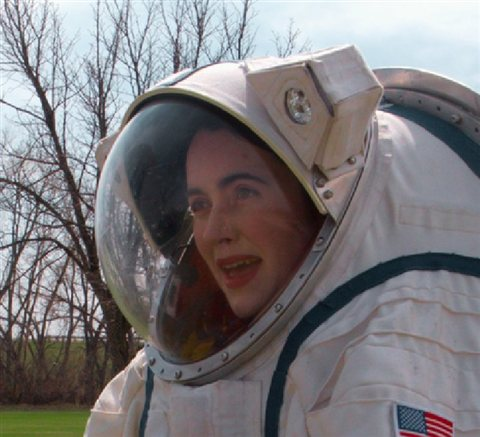
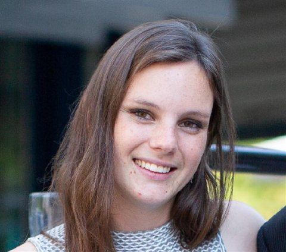
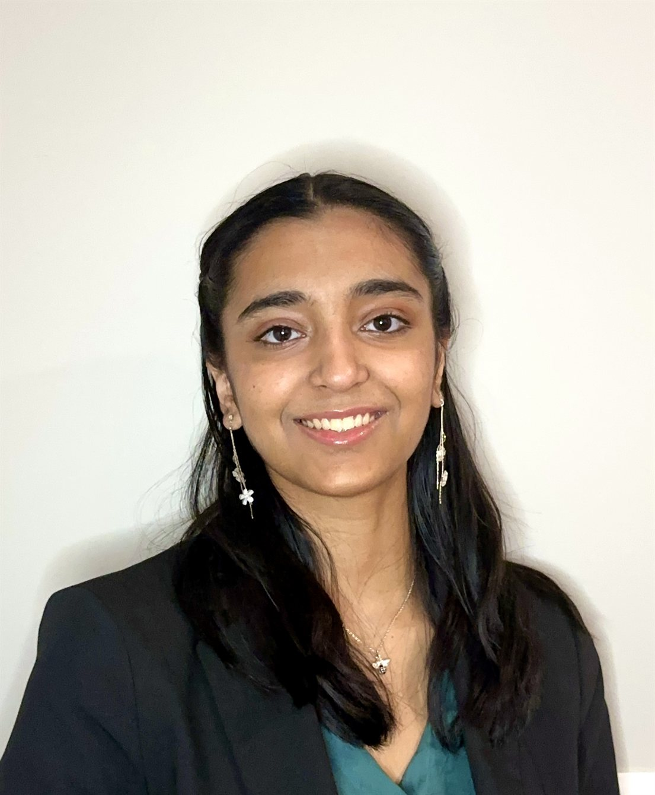
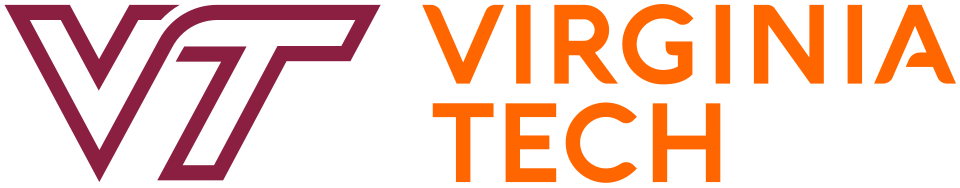
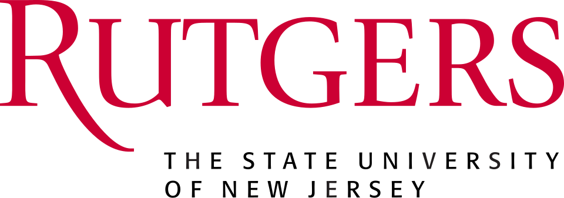
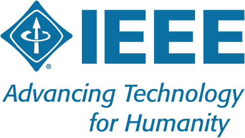

Equipping women to better access, endure & thrive in space.
Adrastea is a youth-led accelerator and collaboration hub dedicated to advancing women in space through research and advocacy.
ADRASTEA
ad astra, for all.
Adrastea is a youth-led accelerator and collaboration hub dedicated to advancing women in space through research and advocacy.
Conducting original research, not just raising awareness or networking.
Addressing women’s health at every age, not only among students.
Bringing in younger fellows as today’s leaders move on.
Translating findings through social media, not just paywalled publications.
Women’s health and space medicine, approached through science, engineering, policy, and media.

Four-time analog astronaut

PhD Materials, University of Cambridge
Physician-astronaut

Founder & CEO



Women’s health in space needs more than one kind of expertise. We don’t just identify the gaps. We build the research, projects, and partnerships that close them.
Our 2029 analog research project, bringing Health & Physiology and Bioengineering & Technology together.
See the project: Analog researchA microgravity menstrual cup in medical-grade silicone, with material validation and rheological blood analogs.
See the project: Menstrual cups in aerospaceMenstrual cycle considerations often overlooked in analog research.
See the project: The Period as an Underlying Covariate for Analog MissionsThree research divisions and one media division, pairing young researchers with senior scientists, engineers, and policymakers.
How the female body responds to spaceflight.
Explore the division: Health & PhysiologyWearable health tech, next-generation spacesuits, and alternatives to menstrual suppression in orbit.
Explore the division: Bioengineering & TechnologyRemoving the systemic, regulatory, and ethical barriers to women in space.
Explore the division: Policy & AdvocacyTurns research and advocacy into stories that reach the public.
Explore the division: Scientific Media & MarketingWe welcome funding, aerospace connections, expert mentorship, in-kind support, and opportunities to showcase youth-led research.
Young researchers, senior scientists, engineers, and policymakers. One mission.